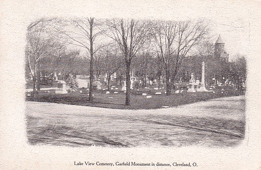

|
Click on any of the titles in the option box below to view the picture:
Lake View Cemetery is located at 12316 Euclid Avenue in Cleveland, Ohio (Cuyahoga County). The coordinates are 41° 30' 44" N, 81° 35' 30" W.
Lake View Cemetery is huge (285 acres), and it is filled with many beautiful gravestones. The first burial was in 1840, and it was officially founded in 1869. There are more than 100,000 people buried in the cemetery, and there are approximately 700 burials each year.
Lake View Cemetery is listed on the National Register of Historic Places since there are so many unique statues and mausoleums. Like other large cemeteries, it is laid out to look like a park filled with gardens. There are many trees, and the grounds are very well maintained. One of the most visited areas of the cemetery is the Garfield Memorial, the final resting place of President James A. Garfield and his wife, Lucretia. Click here to see photos of the memorial.

Antique postcard
I didn't get to spend as much time walking through the cemetery as I would have liked, so I am planning a return visit. Therefore, you can expect more updates to this page in the future!
For more information, please visit the official Lake View Cemetery website.
Where do you want to go? Select your destination:
|